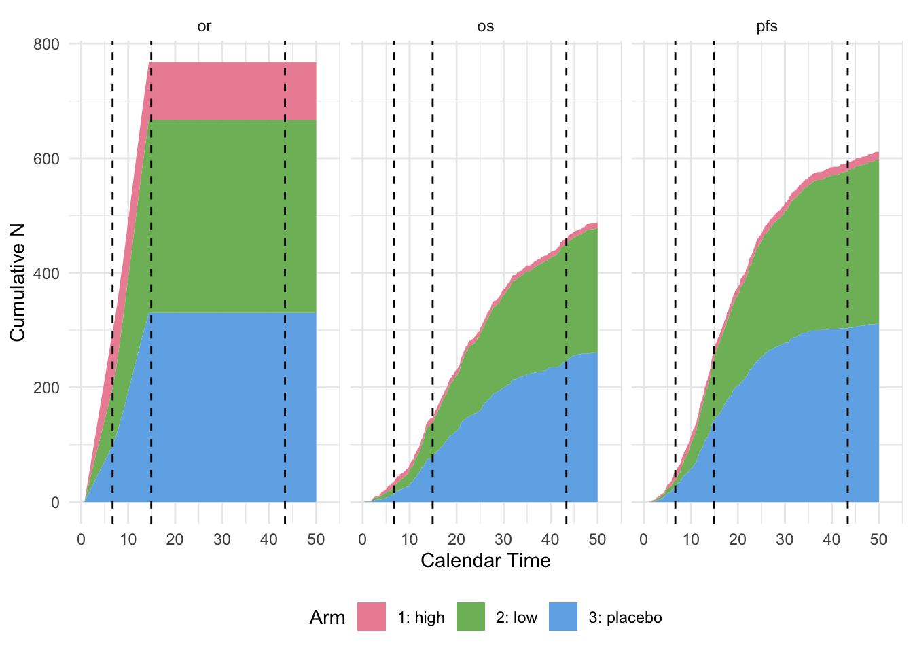

library(dplyr)
library(TrialSimulator)
library(kableExtra)
set.seed(12345)Template for Dose Selection
Design
We consider a randomized phase III study.
- Start with one placebo arm and two dose arms, with a 1:1:1 randomization ratio.
- Planned trial duration is up to 40 months.
- Randomize 50 patients per month for the first 6 months, then 65 patients per month until 800 patients are recruited.
- Dropout rate is 5% at month 12 and 12% at month 24.
- Two time-to-event endpoints
PFSandOSand objective response (OR) rate.- Medians of
PFSin placebo, low and high dose arms are 8.3, 11.5 and 12.2 months, approximately a hazard ratio 0.72 and 0.68. - Medians of
OSin placebo, low and high dose arms are 14.5, 19.3 and 19.9 months, approximately a hazard ratio 0.75 and 0.73. ORrates in placebo, low and high dose arms are 0.05, 0.12, and 0.16.ORneeds three weeks to generate a readout.
- Medians of
- Dose selection is done when having
ORreadout of 200 patients in treated arms.- Statistics of the Farrington-Manning test are computed (high vs. low). High dose is selected if the \(z\) statistic is greater than 2. We don’t claim success of a trial based on
ORRthus no \(\alpha\) is spent on it.
- Statistics of the Farrington-Manning test are computed (high vs. low). High dose is selected if the \(z\) statistic is greater than 2. We don’t claim success of a trial based on
PFSandOSare both tested with one-sidedlogranktest, with the overall family-wise error rate controlled at \(\alpha = 0.025\) under a graphical testing procedure.- \(\alpha\) is split between
PFS(0.01) andOS(0.015).
- \(\alpha\) is split between
- A group sequential design is adopted on placebo and the selected arm.
- Interim analysis is performed for
PFSonly when 250PFSevents are observed. - A non-binding futility analysis is performed on
PFSwith a boundary 0.5 oflogrankstatistics. - Final analysis is performed for both endpoints when all planned patients are randomized and at least 450
OSevents are observed. However, if the target number ofOSevents cannot be reached, the final analysis is performed at month 40. - For
PFS, Lan & DeMets \(\alpha\)-spending is used as an approximation to the O’Brien & Fleming boundaries.
- Interim analysis is performed for
Implementation
Loading relevant packages
Helper functions
In this section, we define helper functions that are task-specific. For example, statistician may simulate correlated PFS, OS and OR in various ways. For the purpose of illustration, we simulate independent endpoints, i.e. corr is currently a dummy argument.
#' Simulate correlated PFS and OS. Marginally, both endpoints follow exponential distribution.
#' @param n integer. Number of samples.
#' @param median_pfs numeric. Median of PFS in an arm.
#' @param median_os numeric. Median of OS in an arm.
#' @param orr numeric. Objective response rate in an arm.
#' @param corr numeric. Parameter of correlation between PFS and OS.
correlated_pfs_os <- function(n, median_pfs, median_os, orr, corr = .0){
pfs <- rexp(n, rate = log(2) / median_pfs)
os <- rexp(n, rate = log(2) / median_os)
or <- rbinom(n, size = 1, prob = orr)
data.frame(pfs = pfs, os = os, or, pfs_event = 1, os_event = 1)
}Define Endpoints and Arms
We define three endpoints in an arm together in the helper function. readout is specified for the endpoint OR as it is not a time-to-event endpoint.
pfs_and_os_in_pbo <- endpoint(name = c('pfs', 'os', 'or'),
type = c('tte', 'tte', 'non-tte'),
readout = c(or = 3/52 * 12),
generator = correlated_pfs_os,
median_pfs = 8.3, median_os = 14.5, orr = 0.05)
pbo <- arm(name = 'placebo')
pbo$add_endpoints(pfs_and_os_in_pbo)pfs_and_os_in_low <- endpoint(name = c('or', 'pfs', 'os'),
type = c('non-tte', 'tte', 'tte'),
readout = c(or = 3/52 * 12),
generator = correlated_pfs_os,
median_pfs = 11.5, median_os = 19.3, orr = 0.12)
low <- arm(name = 'low')
low$add_endpoints(pfs_and_os_in_low)pfs_and_os_in_high <- endpoint(name = c('or', 'pfs', 'os'),
type = c('non-tte', 'tte', 'tte'),
readout = c(or = 3/52 * 12),
generator = correlated_pfs_os,
median_pfs = 12.2, median_os = 19.9, orr = 0.16)
high <- arm(name = 'high')
high$add_endpoints(pfs_and_os_in_high)Define a trial
We use the Weibull distribution to model dropout. The TrialSimulator package provides a helper function to compute the shape and scale parameters of the Weibull distribution.
weibullDropout(time = c(12, 24), dropout_rate = c(.05, .12)) shape scale
1.317422 114.372097 To define arms and a trial, we can
accrual_rate <- data.frame(end_time = c(6, Inf),
piecewise_rate = c(50, 65))
trial <- trial(
name = 'trial-123', n_patients = 800, duration = 50,
enroller = StaggeredRecruiter, accrual_rate = accrual_rate,
dropout = rweibull, shape = 1.32, scale = 114.4
)
trial$add_arms(sample_ratio = c(1, 1, 1), pbo, low, high)Define Trial Events and Actions
We conduct p-values of PFS and OS at interim and final analysis based on the logrank statistics and independent increment method. We could use the same approach to determine the \(z\) statistic for futility analysis as well, however, for the sake of simplicity, we use the conventional \(z\) statistic in this example.
action_at_dose_selection <- function(trial, event_name){
locked_data <- trial$get_locked_data(event_name)
#' codes below this line are customized to conduct statistical tests and save results
fm <- fitFarringtonManning(endpoint = 'or',
placebo = 'low',
alternative = 'greater',
data = locked_data,
delta = 0,
arm %in% c('high', 'low'))
removed_arm <- ifelse(fm$z < 2, 'high', 'low')
trial$save(value = removed_arm, name = 'removed_arm')
trial$remove_arms(removed_arm)
}action_at_interim <- function(trial, event_name){
locked_data <- trial$get_locked_data(event_name)
#' codes below this line are customized to conduct statistical tests and save results
pfs <- fitLogrank(endpoint = 'pfs', placebo = 'placebo',
data = locked_data,
arm %in% trial$get_arms_name()) ## fit it on kept arms only
#' futility based on conventional z statistics w/o independent increment
trial$save(value = ifelse(pfs$z < .5, 'futile', 'efficacious'), name = 'futility')
}#' action at final analysis is very similar to the one at interim,
#' except that a graphical test is performed
action_at_final <- function(trial, event_name){
#' codes below this line are customized to conduct statistical tests and save results
## test PFS
pinfo_pfs <- data.frame(placebo = c(40, 210, 330), low = c(40, 210, 330), high = c(40, 210, 330))
rownames(pinfo_pfs) <- c('dose selection', 'interim analysis', 'final analysis')
dt_pfs <- trial$dunnettTest(endpoint = 'pfs', placebo = 'placebo',
treatments = c('high', 'low'),
events = c('dose selection', 'interim analysis', 'final analysis'),
planned_info = pinfo_pfs)
ct_pfs <- trial$closedTest(dt_pfs, treatments = c('high', 'low'),
events = c('interim analysis', 'final analysis'),
alpha = .01, alpha_spending = 'asOF')
## test OS
pinfo_os <- data.frame(placebo = c(25, 425), low = c(25, 425), high = c(25, 425))
rownames(pinfo_os) <- c('dose selection', 'final analysis')
dt_os <- trial$dunnettTest(endpoint = 'os', placebo = 'placebo',
treatments = c('high', 'low'),
events = c('dose selection', 'final analysis'),
planned_info = pinfo_os)
ct_os <- trial$closedTest(dt_os, treatments = c('high', 'low'),
events = c('final analysis'),
alpha = .015, alpha_spending = 'asOF')
trial$save(value = ct_pfs$decision[ct_pfs$arm == 'high'], name = 'pfs_high_decision')
trial$save(value = ct_pfs$decision[ct_pfs$arm == 'low'], name = 'pfs_low_decision')
trial$save(value = ct_os$decision[ct_os$arm == 'high'], name = 'os_high_decision')
trial$save(value = ct_os$decision[ct_os$arm == 'low'], name = 'os_low_decision')
ct_os
}We plan three trial events for dose selection, interim and final analysis.
dose_selection <-
event(name = 'dose selection',
trigger_condition =
eventNumber(endpoint = 'or', n = 200, arms = c('low', 'high')),
action = action_at_dose_selection)interim <- event(name = 'interim analysis',
trigger_condition =
eventNumber(endpoint = 'pfs', n = 250),
action = action_at_interim)final <- event(name = 'final analysis',
trigger_condition = (
eventNumber(endpoint = 'os', n = 450)
) | calendarTime(time = 50),
action = action_at_final)We then register the three trial events to a listener who will monitor the trial.
listener <- listener()
#' register trial events with the listener
listener$add_events(dose_selection, interim, final)Execute a Trial
To execute a trial, we call the member function run in the controller of the trial and listener. Here we simulate one trial, so that a plot of cumulative events are generated automatically for each of the endpoints. We can set n to a larger integer for more replicates.
controller <- controller(trial, listener)
controller$run(n = 1, plot_event = TRUE)Conditioin of event <dose selection> is being checked. Data is locked at time = 6.67230769230769 for event <dose selection>.
Locked data can be accessed in Trial$get_locked_data('dose selection').
Number of events at lock time: patient pfs os or arms
1 229 26 22 200 <low, high>Arm <high> is removed. Sample ratio is updated to be <placebo: 1, low: 1>. Trial data is rolling back to time = 6.67230769230769.
Randomization will be carried out again for unenrolled patients. Randomization is done for 456 potential patients. Data of 456 potential patients are generated for the trial with 2 arm(s) <placebo, low>. Conditioin of event <interim analysis> is being checked. Data is locked at time = 14.903229971762 for event <interim analysis>.
Locked data can be accessed in Trial$get_locked_data('interim analysis').
Number of events at lock time: patient pfs os or arms
1 686 250 137 667 <placebo, low>Action for <interim analysis> is executed: [1] ""Conditioin of event <final analysis> is being checked. Data is locked at time = 43.3563685321342 for event <final analysis>.
Locked data can be accessed in Trial$get_locked_data('final analysis').
Number of events at lock time: patient pfs os or arms
1 686 578 450 667 <placebo, low>Warning in self$independentIncrement(endpoint, placebo, events, planned_info = "oracle", : In the arm(s) <high>, stage-wise information (number of events) are lower than 30 (see stage_* below).
Make sure that such a low stage-wise information is sufficient to maintain normality of independent increments of logrank statistics. event event_time planned_info info stage_info stage_n_pbo
1 dose selection 6.672308 115 25 25 115
stage_n_trt trt_str
1 114 high[31m>>>>>>>>>>>>>>>>>>>>>>>>>>>>>>>>>>>>[0mWarning in self$independentIncrement(endpoint, placebo, events, planned_info = "oracle", : In the arm(s) <low>, stage-wise information (number of events) are lower than 30 (see stage_* below).
Make sure that such a low stage-wise information is sufficient to maintain normality of independent increments of logrank statistics. event event_time planned_info info stage_info stage_n_pbo
1 dose selection 6.672308 115 27 27 115
stage_n_trt trt_str
1 115 low[31m>>>>>>>>>>>>>>>>>>>>>>>>>>>>>>>>>>>>[0mAction for <final analysis> is executed: arm decision event_at_reject reject_time
1 high accept <NA> Inf
2 low reject final analysis 43.35637
Extract the Output
We can display information saved for each of the simulated trials by the member function get_output.
controller$get_output() %>%
kable(escape = TRUE) %>%
kable_styling(bootstrap_options = "striped",
full_width = FALSE,
position = "left") %>%
scroll_box(width = "100%")| trial | seed | event_time_<dose selection> | n_events_<dose selection>_<patient_id> | n_events_<dose selection>_<pfs> | n_events_<dose selection>_<os> | n_events_<dose selection>_<or> | n_events_<dose selection>_<arms> | removed_arm | event_time_<interim analysis> | n_events_<interim analysis>_<patient_id> | n_events_<interim analysis>_<pfs> | n_events_<interim analysis>_<os> | n_events_<interim analysis>_<or> | n_events_<interim analysis>_<arms> | futility | event_time_<final analysis> | n_events_<final analysis>_<patient_id> | n_events_<final analysis>_<pfs> | n_events_<final analysis>_<os> | n_events_<final analysis>_<or> | n_events_<final analysis>_<arms> | pfs_high_decision | pfs_low_decision | os_high_decision | os_low_decision | error_message |
|---|---|---|---|---|---|---|---|---|---|---|---|---|---|---|---|---|---|---|---|---|---|---|---|---|---|---|
| trial-123 | 620782540 | 6.672308 | 229 | 26 | 22 | 200 | <low, high> | high | 14.90323 | 686 | 250 | 137 | 667 | <placebo, low> | efficacious | 43.35637 | 686 | 578 | 450 | 667 | <placebo, low> | accept | accept | accept | reject |